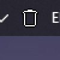

К руководству
Корзина трее MiniBin
В этом гайде вы узнаете, как перенести корзину в windows с рабочего стола в трей или на панель задач с помощью minibin
В этом гайде вы узнаете, как перенести корзину в windows с рабочего стола в трей или на панель задач с помощью minibin